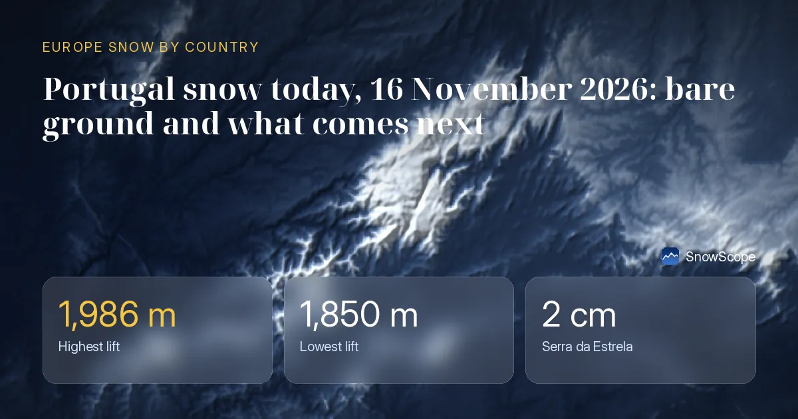

Portugal snow today, 16 November 2026: bare ground and what comes next
Portugal's two ski resorts sit on bare ground as of 16 November, with zero snow on the slopes. The dry spell breaks next week when the first snow is forecast to arrive around 23 November, bringing light accumulation to the high peaks.
See the live snow forecast for Serra da Estrela in the SnowScope appSnow depth, powder alerts and the 3D map, free.
The current picture
Across Portugal's mapped high ground above 500 metres, snow cover is absent. Neither Serra da Estrela (Portugal's highest ski zone, at 1,986 metres) nor Ski Parque shows any white on the slopes right now.
This is typical for mid-November in Portugal. The Atlantic storm track usually stays far north at this time of year, leaving the Iberian peaks in dry autumn conditions. The mapped area tracks about 5,830 km² of ground above 500 metres, and none of it carries snow today.
| Resort | Snow depth | New snow, 72 h | Coming, next days | Top |
|---|---|---|---|---|
| Serra da Estrela | 0 cm | 0 cm | 2 cm | 1,986 m |
| Ski Parque | 0 cm | 0 cm | 0 cm | 653 m |

When the first snow will come
A change is in the forecast. Around 23 November, the first snow-bringing weather system is expected to reach Portugal's mountains. This marks the start of the winter season in the country's high terrain.
Serra da Estrela, the larger resort at the head of the Serra range, could see up to 2 cm of fresh snow within the next three days from the data day (by 19 November), and the forecast hints at 1 cm arriving by late in the week (around 23 November). These are light falls typical of early season—not enough to build a skiable base yet, but enough to soften the rocky slopes.
Longer outlook: late November promise
The second week of the forecast (24 to 30 November) shows a more substantial opportunity. Up to 13 cm is forecast where snow does fall across the country's high ground. This is when the winter pattern could gain traction and deposit meaningful snow on the peaks.
Serra da Estrela will be the focus—it has the height advantage and faces Atlantic moisture. Ski Parque, at only 653 metres, will struggle in this warmer, lower terrain and is unlikely to hold snow even when it falls. The higher Serra route is where any early-season runs will happen.
Why Portugal is behind neighbours
Unlike the Alps to the north, Portugal's mountains are lower, further south, and hit by fewer Atlantic systems in autumn. The Atlantic storms that dump heavy snow on the Sierra Nevada in Spain or on French peaks still need to track far enough south to reach Portuguese slopes, and in November that rarely happens.
By late November, as the jet stream drifts south, Portugal catches more weather. This is why the forecast jumps to 13 cm in week two—the Atlantic pattern shifts. For now, the country remains in a dry window that is not unusual for the season.
What to watch and prepare
The two resorts have no snow to work with as of 16 November. If you are planning a trip, mid-to-late November is early for Portugal. The realistic window opens from about 23 November onward, once the first snow arrives and builds through the month.
Early-season snow is often thin and rests directly on rocks and grass. Even when 1 to 2 cm arrives, it may not cover all hazards. Groomed runs are always the safest choice when the season begins. Check resort reports closer to late November to see what they have managed to build or preserve.
Tips for skiers
- Wait until late November to plan a trip to Portuguese ski areas. The 16 November date shows no snow yet; conditions only improve from 23 November onward.
- If snow does arrive by late November, stick to groomed and marked slopes. Early-season coverage is thin and rocks hide under shallow snow.
- Serra da Estrela at 1,986 metres is your best bet for snow. Ski Parque at 653 metres is too low for reliable early-season snow.
- Check the local avalanche bulletin before any off-piste venture, even on shallow slopes. Fresh snow bonding is weak in early season.
- Bring layers: early-season days can swing from mild to cold, and thin snow often means bright sun on bare patches around the pistes.
About these numbers
Resort snow depths are the deepest snow on the resort's upper slopes on the date shown; they are estimates for an area, not a measurement at one point. Forecasts can change. Always read the official avalanche bulletin before going off-piste.
Cite this report
For research, teaching or the press: the numbers and charts are free to reuse under CC BY 4.0 with this citation.
SnowScope (2026), Portugal snow today, 16 November 2026: bare ground and what comes next, https://snowscope.app/blog/en/2026/11/portugal-snow-report-16-november-2026.html, accessed 2026-11-16
SnowScope (Atlas Labs). (2026, November 16). Portugal snow today, 16 November 2026: bare ground and what comes next. SnowScope snow reports. https://snowscope.app/blog/en/2026/11/portugal-snow-report-16-november-2026.html
BibTeX
@misc{snowscope2026portugalsnowreport16nove,
author = {{SnowScope (Atlas Labs)}},
title = {Portugal snow today, 16 November 2026: bare ground and what comes next},
year = {2026},
month = nov,
howpublished = {\url{https://snowscope.app/blog/en/2026/11/portugal-snow-report-16-november-2026.html}},
note = {Published 2026-11-16 20:42 UTC; accessed 2026-11-16}
}· CC BY 4.0 · Methods, data and tools →
Serra da Estrela: snow and temperature by height, this winter vs last (tools) →
Follow Serra da Estrela
Free: a message when fresh snow is coming, and the forecast every morning.
More snow reports

Himalaya snow cover in November 2026 from NASA MODIS: snow on 610,409 km² of ground above 2,000 m between the Hindu Kush and Bhutan, half the clear ground white from about 4,800 m in Nepal and 3,600 m in the Karakoram. The NDSI explained, plus shadows, cloud and the low autumn sun.

SnowScope's peak finder is a free peak finder app: point your phone at the mountains and it names the summits, with height, distance and climb time. Our tests: 98 % of the summits it lists are really in sight, and on real photos it corrected compass errors of up to 105° to 0.15°. Free with 3 names, every peak for $0.99 once.

Up to 30 cm of snow fell on northern Velebit and Bjelolasica on Friday 13 November 2026. By Tuesday it was gone. Day by day, what the mountains kept, and when snow comes back.